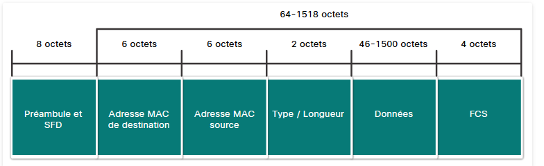
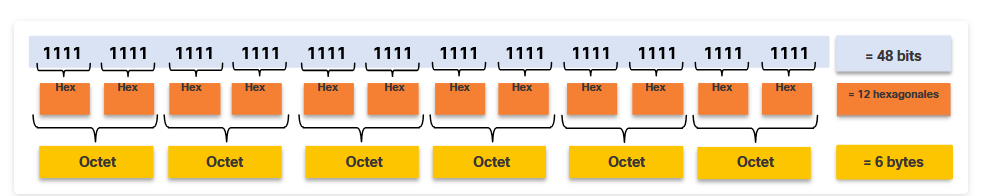
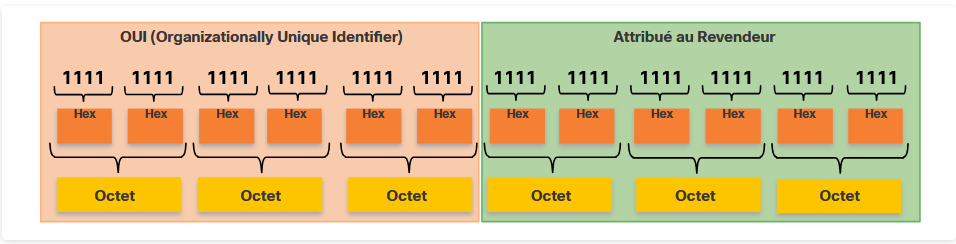

Ethernet et la couche liaison de données
Ethernet opère aux couches Physique (L1) et Liaison de données (L2). En couche 2, il se divise en deux sous-couches (normes IEEE 802.2 / 802.3) :
-
Sous-couche LLC (Logical Link Control - IEEE 802.2) : Fait l’interface entre les logiciels/protocoles de couche 3 (IPv4, IPv6) et le matériel de couche 2.
-
Sous-couche MAC (Media Access Control - IEEE 802.3) : Implémentée dans le matériel (carte réseau). Responsable de l’encapsulation des données et du contrôle d’accès au support.
- Rappel (voir module 6) : L’Ethernet ancien en mode semi-duplex utilise l’algorithme CSMA/CD pour la gestion des conflits d’accès.
Tailles de trame Ethernet
-
Taille minimale : 64 octets. Les trames plus petites sont appelées fragments de collision ou trames incomplètes et sont rejetées.
-
Taille maximale : 1518 octets (hors préambule). Les trames plus grandes sont appelées trames géantes (jumbo frames ou baby giant frames).
Champs de la trame Ethernet

| Champ | Taille | Description |
|---|---|---|
| Préambule & SFD | 8 octets | Synchronisation du rythme entre l’émetteur et le récepteur. |
| MAC Destination | 6 octets | Identifiant L2 du destinataire (Rappel : voir 6.3.3). |
| MAC Source | 6 octets | Identifiant L2 de l’émetteur (Rappel : voir 6.3.3). |
| EtherType / Longueur | 2 octets | Identifie le protocole L3 encapsulé (ex: 0x800 IPv4, 0x86DD IPv6, 0x806 ARP). |
| Données (Payload) | 46 à 1500 octets | Paquet L3 encapsulé (Rappel : voir 6.3.2). Du bourrage est ajouté si la taille est inférieure à 46 octets. |
| FCS | 4 octets | Vérification d’erreurs via un calcul CRC (Rappel : voir 6.3.2). |
Adresses MAC Ethernet
1. Format hexadécimal
-
Représentation : Utilise la base 16 (chiffres
0à9et lettresAàF). Un chiffre hexadécimal représente 4 bits binaires (un nibble). -
Conversion de base :
- Un octet (8 bits) varie de
00000000à11111111en binaire, soit de00àFFen hexadécimal (0 à 255 en décimal).
- Un octet (8 bits) varie de
-
Notations courantes : Précédé de
0x(ex:0x73), suivi deH(ex:73H) ou codé en base 16.
2. Structure d’une adresse MAC Ethernet
L’adresse MAC (Media Access Control) est une adresse physique de 48 bits (6 octets), exprimée par 12 chiffres hexadécimaux. Elle est divisée en deux parties de 24 bits (3 octets) chacune :
-

-
OUI (Organizationally Unique Identifier) :
-
Les 6 premiers chiffres hexadécimaux (24 bits).
-
Code unique attribué par l’IEEE au fabricant (ex:
00-60-2Fpour Cisco).
-
-
Identifiant d’interface (attribué par le vendeur) :
-
Les 6 derniers chiffres hexadécimaux (24 bits).
-
Valeur unique attribuée par le constructeur à chaque carte réseau (NIC).
-
-
Traitement des trames
1. Nature de l’adresse MAC (BIA)
-
Adresse rémanente (Burned-In Address - BIA) : Gravée à l’origine dans la mémoire morte (ROM) de la carte réseau (NIC).
-
Chargement au démarrage : Copiée de la mémoire ROM vers la mémoire vive (RAM) lors du démarrage de l’équipement.
-
Usurpation / Modification (Spoofing) : Les systèmes d’exploitation modernes permettent de modifier l’adresse MAC par logiciel (en RAM), ce qui rend le filtrage MAC moins fiable pour la sécurité.
2. Processus de réception et de traitement
À la réception d’une trame Ethernet, la carte réseau examine l’adresse MAC de destination
-
Match / Correspondance : La trame est acceptée et transmise aux couches supérieures pour désencapsulation si l’adresse MAC de destination correspond à :
-
L’adresse MAC physique de la carte réseau (RAM).
-
Une adresse de diffusion (Broadcast).
-
Une adresse de multidiffusion (Multicast) à laquelle l’hôte appartient.
-
-
Non-correspondance : Si l’adresse ne correspond pas, la carte réseau ignore et rejette simplement la trame.
Types d’adresses MAC Ethernet
Les adresses MAC de destination se divisent en trois catégories selon le mode de transmission (Rappel : l’adresse MAC source doit toujours être de monodiffusion).
| Type | Adresse MAC Destination | Plage IP / Protocole associé | Comportement du réseau |
|---|---|---|---|
| Monodiffusion (Unicast) | Adresse MAC unique de l’hôte distant. | Adresse IP unique (ex: 192.168.1.200). | Communication de un à un. L’adresse MAC destination est obtenue via ARP (IPv4) ou ND (IPv6). |
| Diffusion (Broadcast) | FF-FF-FF-FF-FF-FF (48 bits à 1). | IP de diffusion (ex: 192.168.1.255) ou hors IPv4 (ARP). | Communication de un à tous. Inondé par le commutateur sur tous les ports sauf l’entrant ; non transmis par les routeurs. Ex: DHCP, ARP. |
| Multidiffusion (Multicast) | • IPv4 : commence par 01-00-5E.• IPv6 : commence par 33-33.• Non-IP : STP, LLDP. | • IPv4 : 224.0.0.0 à 239.255.255.255.• IPv6 : FF00::/8. | Communication de un à un groupe abonné. Inondé par le commutateur (sauf si configuré pour l’écoute/IGMP). Ex: flux vidéo, routage. |
Switching Ethernet
1. Rôle du switch et table d’adresses MAC
Un switch de couche 2 utilise la table d’adresses MAC (aussi appelée table CAM - Content-Addressable Memory) pour prendre ses décisions de transfert et éviter d’inonder le réseau inutilement.
-
Fonctionnement L2 : Il prend ses décisions uniquement sur les adresses MAC et ignore le protocole de couche 3 (ex: paquet IP, ARP, ND).
-
État initial : Au démarrage, la table d’adresses MAC est vide.
2. Processus d’apprentissage et de transfert
Pour chaque trame reçue, le commutateur exécute deux actions distinctes :
-
1. Apprentissage (Examining Source MAC Address) :
-
Il examine l’adresse MAC source et le port d’entrée de la trame.
-
Si l’adresse n’est pas dans la table, il l’ajoute avec son numéro de port
-
Si l’adresse existe déjà, il réinitialise le compteur d’obsolescence (conservé par défaut pendant 5 minutes).
-
Si l’adresse existe mais sur un port différent, il met à jour le port associé.
-
-
2. Transfert (Examining Destination MAC Address) :
-
Il cherche une correspondance pour l’adresse MAC de destination dans sa table.
-
Si trouvée (Unicast connu) : Il transmet la trame uniquement sur le port désigné (filtrage).
-
Si non trouvée (Unicast inconnu) ou Broadcast/Multicast : Il transfère la trame sur tous les ports sauf le port d’entrée (Unknown Unicast Flooding).
-
3. Filtrage des trames
À mesure que la table d’adresses MAC se remplit grâce aux échanges aller-retour entre les hôtes, le commutateur bascule en mode filtrage : les trames destinées à un hôte spécifique ne sont envoyées que sur le port unique correspondant, ce qui isole les communications et préserve la bande passante du réseau.
Switch connectés et passerelle par défaut
1. Tables d’adresses MAC sur des switch interconnectés
-
Association multiple : Un même port de Switch peut être associé à plusieurs adresses MAC.
-
Cas des Switch en cascade : Lorsqu’un switch est relié à un autre switch, le port d’interconnexion apprend les adresses MAC de tous les équipements situés derrière le second switch. Chaque trame reçue sur ce port enregistre l’adresse MAC source correspondante.
2. Envoi d’une trame vers un réseau distant / Passerelle par défaut
-
Destination distante : Si l’adresse IP de destination se trouve sur un réseau distant, la trame Ethernet ne peut pas être envoyée directement à l’hôte final.
-
Rôle de la passerelle par défaut : La trame Ethernet est encapsulée avec l’adresse MAC de destination de la passerelle par défaut (l’interface du routeur local).
-
Structure des en-têtes lors de la transmission :
-
Couche 3 (IP) : Contient l’IP source de l’hôte émetteur et l’IP de destination de l’hôte distant final.
-
Couche 2 (Ethernet) : Contient l’adresse MAC source de l’émetteur et l’adresse MAC de destination de la passerelle par défaut (routeur).
-
Méthodes de transmission et vitesses de commutation
1. Méthodes de transmission des trames (
Les switch Cisco utilisent deux méthodes principales pour transférer les trames :
-
Stockage et retransmission (Store-and-Forward) :
-
Le switch reçoit la trame entière et calcule le contrôle par redondance cyclique (CRC) pour vérifier l’absence d’erreurs.
-
Si le CRC est valide, la trame est transmise ; sinon, elle est abandonnée, évitant ainsi le gaspillage de bande passante.
-
Obligatoire pour la qualité de service (QoS) afin de donner la priorité au trafic sensible (ex: Voix sur IP).
-
-
Commutation immédiate (Cut-Through) :
-
Le switch transmet la trame dès qu’il a lu l’adresse MAC de destination (avant même la réception complète). Aucune vérification d’erreur (CRC) n’est effectuée.
-
Variante Fast-Forward : Latence la plus faible ; la transmission débute immédiatement après la lecture de l’adresse MAC de destination.
-
Variante Fragment-Free : Compromis où le commutateur stocke les 64 premiers octets de la trame avant de transmettre, afin d’éliminer la majorité des erreurs dues aux collisions.
-
2. Méthodes de mise en mémoire tampon (Buffering)
Pour gérer la congestion ou le stockage temporaire des trames, le commutateur utilise deux types de mémoire tampon :
| Méthode | Description |
|---|---|
| Mémoire axée sur les ports (Port-based) | Les trames sont stockées dans des files d’attente dédiées à des ports spécifiques. Un port occupé peut bloquer la transmission de toutes les trames de la file, même celles destinées à des ports libres. |
| Mémoire partagée (Shared) | Toutes les trames sont placées dans un tampon commun alloué dynamiquement. Permet la commutation asymétrique (ex: connecter un serveur à 10 Gbit/s et des PC à 1 Gbit/s) avec moins de pertes de trames. |
3. Paramètres Duplex et Débit
-
Mode duplex intégral (Full-Duplex) : Les deux extrémités peuvent envoyer et recevoir des données en même temps.
-
Mode semi-duplex (Half-Duplex) : Une seule extrémité peut envoyer des données à la fois.
-
Négociation automatique (Autonegotiation) : Option qui configure automatiquement la vitesse (10/100/1000 Mbit/s) et le mode duplex les plus performants supportés par les deux équipements. (Les ports Gigabit Ethernet fonctionnent uniquement en duplex intégral).
4. Fonction Auto-MDIX (7.4.5)
-
Historique des câbles :
-
Câble droit (Straight-through) : Connecte des équipements différents (Commutateur à Routeur, Commutateur à PC).
-
Câble croisé (Crossover) : Connecte des équipements similaires (Commutateur à Commutateur, Routeur à PC).
-
-
Auto-MDIX : Détecte automatiquement le type de câble branché (droit ou croisé) et réorganise les connexions en interne en conséquence. Activée par défaut sur Cisco IOS 12.2(18)SE ou ultérieur (commande :
mdix auto).